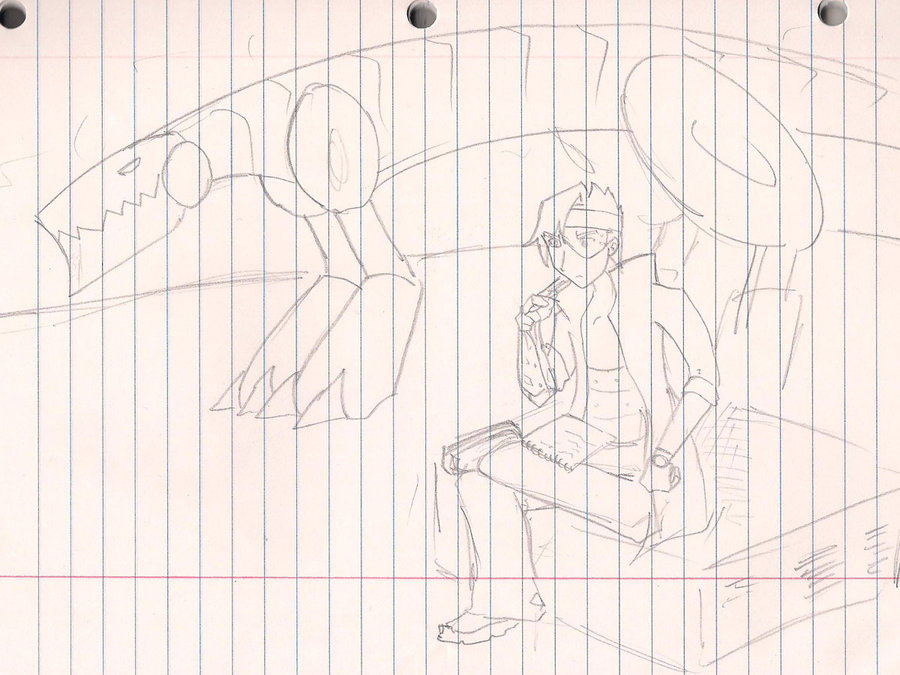
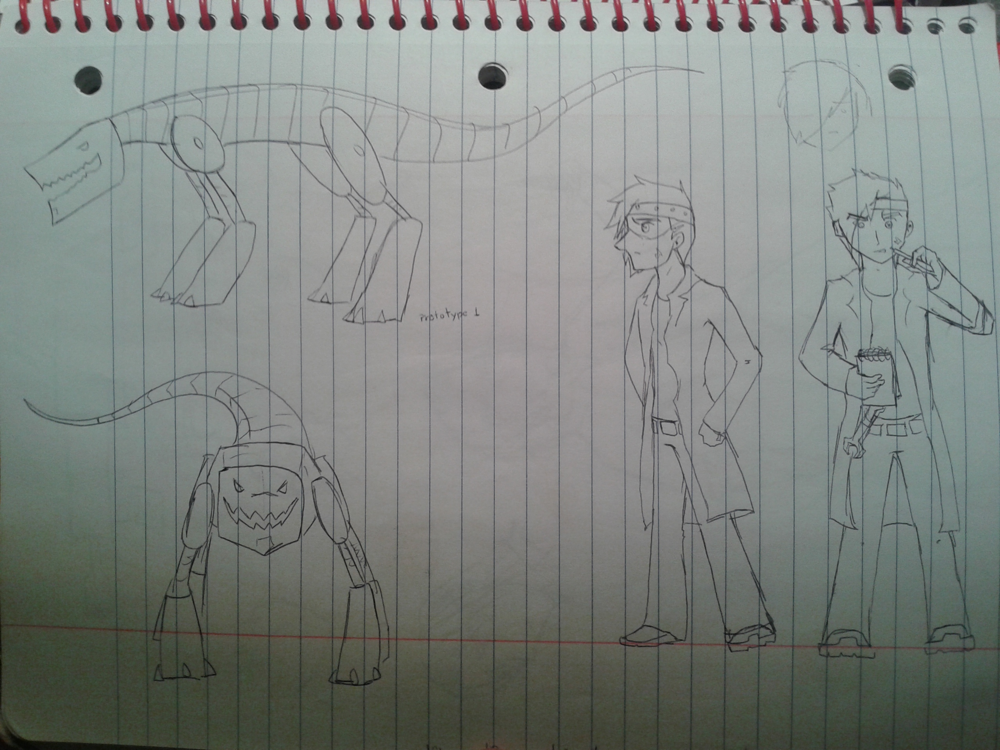

I made it for a class in late 2012, by then I was already on my now permanent creative block, but I managed to draft out something. By then I was playing Megaman 64 and Metal Gear Solid, so it was heavily influenced by both.
Lo hice para una clase en el 2012, entonces ya estaba en mi bloqueo creativo permanente, pero logré que se me ocurriera algo. En esos tiempos estuve jugando Megaman 64 y Metal Gear Solid, así que ambos influyeron mucho.
Neon was an engineer that was part of some secret special force, but he deserted because he's actually evil and wants to destroy the city. In my dream future in which I can do anything I want, this would be a 3D sandbox stealth game in which you travel the city, avoid getting caught, collect parts, build machines, and then use them to destroy said city. Also boss battle your old force companions. I imagine the art heavily black and pink as well.
Neon era un ingeniero parte de unas fuerzas secretas especiales, pero desertó porque le tenía mucho odio a todos y quería destruir la ciudad. En mi futuro de ensueño donde puedo hacer lo que quiera, este sería un juego stealth 3D sandbox donde recorres la ciudad, evitas que te capturen, robas partes, construyes máquinas y las usas para ir destruyendo dicha ciudad. Todo el escenario sería negro con las orillas blancas pero el cielo y algunas luces serían rosas.